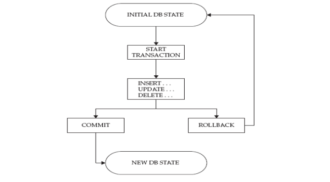
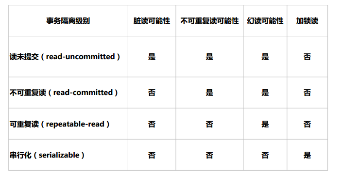

一、事务
什么是事务？
事务Transactions：一组原子性的SQL语句，或一个独立工作单元。
事务主要用于处理操作量大，复杂度高的数据。比如说，在人员管理系统中，你删除一个
人员，你既需要删除人员的基本资料，也要删除和该人员相关的信息，如信箱，文章等等，
这样，这些数据库操作语句就构成一个事务
事务日志：记录事务信息，实现undo,redo等故障恢复功能
ACID特性：
A：atomicity原子性；
整个事务中的所有操作要么全部成功执行，要么全部失败后回滚，不可能停滞在中间某个环节。
C：consistency一致性；
数据库总是从一个一致性状态转换为另一个一致性状态
也就是说：如果事务是并发多个，系统也必须如同串行事务一样操作。其主要特征是保护性和不
变性(Preserving an Invariant)，以转账案例为例，假设有五个账户，每个账户余额是100元，那
么五个账户总额是500元，如果在这个5个账户之间同时发生多个转账，无论并发多少个，比如在
A与B账户之间转账5元，在C与D账户之间转账10元，在B与E之间转账15元，五个账户总额也应该
还是500元，这就是保护性和不变性
I：Isolation隔离性；
一个事务所做出的操作在提交之前，是不能为其它事务所见；隔离有多种隔离级别，实现并发。
如果有两个事务，运行在相同的时间内，执行相同的功能，事务的隔离性将确保每一事务在系统中
认为只有该事务在使用系统。这种属性有时称为串行化，为了防止事务操作间的混淆，必须串行化
或序列化请求，使得在同一时间仅有一个请求用于同一数据。
D：durability持久性；
一旦事务提交，其所做的修改会永久保存于数据库中

如图所示一个事务的生命周期：
(1) 开启一个事务
(2) 进行事务操作，注：只有对数据库的增、删、改操作才记入事务，SELECT查
询语句不计入事务。
(3) ROLLBACK将会使未提交的数据回滚，数据还原至更改前的数据
(4) 一旦进行了COMMIT提交，新的数据将会持久的保存在数据库之中，并不会被回
滚，即事务的持久性。
事务控制语句：
BEGIN或START TRANSACTION：显式地开启一个事务；
ROLLBACK：回滚会结束用户的事务，并撤销正在进行的所有未提交的修改；
COMMIT：提交事务，并使已对数据库进行的所有修改称为永久性的；
SAVEPOINT identifier：SAVEPOINT允许在事务中创建一个保存点，一个事务中可以有多个SAVEPOINT；
ROLLBACK TO identifier：把事务回滚到标记点；
RELEASE SAVEPOINT identifier：删除一个事务的保存点，当没有指定的保存点时，执行该语句会抛出一个异常；
实现MySQL事务处理：
方法一：用 BEGIN, ROLLBACK, COMMIT来实现
BEGIN 开始一个事务
ROLLBACK 事务回滚
COMMIT 事务确认
方法二：直接用 SET 来改变 MySQL 的自动提交模式:
SET AUTOCOMMIT=OFF 禁止自动提交
SET AUTOCOMMIT=ON 开启自动提交（系统默认项）
示例：事务测试
![M40SD}~}HE((AK_QBQ0}%W
二、事务隔离级别
在数据库操作中，为了有效保证并发读取数据的正确性，提出的事务隔离级别。
数据库是要被广大客户所共享访问的，那么在数据库操作过程中很可能出现以下几种不确定情况。
更新丢失
两个事务都同时更新一行数据，一个事务对数据的更新把另一个事务对数据的更新覆盖了。这是因为系统
没有执行任何的锁操作，因此并发事务并没有被隔离开来。
脏读
一个事务读取到了另一个事务未提交的数据操作结果。这是相当危险的，因为很可能所有的操作都被回
滚。
虚读
事务T1读取某一数据后，事务T2对其做了修改，当事务T1再次读该数据时得到与前一次不同的值。
幻读
事务在操作过程中进行两次查询，第二次查询的结果包含了第一次查询中未出现的数据或者缺少了第一次
查询中出现的数据（这里并不要求两次查询的SQL语句相同）。这是因为在两次查询过程中有另外一个事
务插入数据造成的。
事务隔离级别
为了避免上面出现的几种情况，在标准SQL规范中，定义了4个事务隔离级别，不同的隔离级别对事务的
处理不同。
从上至下更加严格：
READ UNCOMMITTED：可读取到未提交数据，产生脏读
READ COMMITTED：可读取到提交数据，但未提交数据不可读，产
生不可重复读，即可读取到多个提交数据，导致每次读取数据不一致
REPEATABLE READ 可重复读，多次读取数据都一致，产生幻读，即
读取过程中，即使有其它提交的事务修改数据，仍只能读取到未修改
前的旧数据。此为MySQL默认设置
SERIALIZABILE 可串行化，未提交的读事务阻塞修改事务，或者未
提交的修改事务阻塞读事务。导致并发性能差

管理事务隔离级别：
服务器变量**tx_isolation**指定，
默认为REPEATABLE-READ，可在GLOBAL和SESSION级进行设置
SET tx_isolation=”
READ-UNCOMMITTED
READ-COMMITTED
REPEATABLE-READ
SERIALIZABLE
服务器选项中指定
vim /etc/my.cnf
[mysqld]
transaction-isolation=SERIALIZABLE
三、并发控制
锁粒度：
表级锁
行级锁
锁：
读锁：共享锁，只读不可写，多个读互不阻塞，
写锁：独占锁,排它锁，一个写锁会阻塞其它读和它锁
实现：
存储引擎：自行实现其锁策略和锁粒度
服务器级：实现了锁，表级锁；用户可显式请求
分类：
隐式锁：由存储引擎自动施加锁
显式锁：用户手动请求
锁策略：在锁粒度及数据安全性寻求的平衡机制
显示使用锁
LOCK TABLES
tbl_name [[AS] alias] lock_type
[, tbl_name [[AS] alias] lock_type] …
lock_type: READ ， WRITE
解锁
UNLOCK TABLES
FLUSH TABLES tb_name[,…] [WITH READ LOCK]
关闭正在打开的表（清除查询缓存），通常在备份前加全局读锁
SELECT clause [FOR UPDATE | LOCK IN SHARE MODE]
查询时加写或读锁
读锁：
读锁也称为共享锁，读锁允许多个连接可以同一时刻并发的读取同一资源,互不干扰；
添加读锁：
MariaDB [hellodb]> lock tables teachers read;
写锁：
写锁也称为排他锁，一个写锁会阻塞其他的写锁或读锁，保证同一时刻只有一个连接可以写入数据，同时
防止其他用户对这个数据的读写。
添加写锁：
MariaDB [hellodb]> lock tables students write;
死锁：
两个或多个事务在同一资源相互占用并请求锁定对方占用的资源的状态
如下所示：
事务1 事务2
update table1 update table2
update table2 update table1
产生死锁
四、MVCC-多版本的并发控制协议
MySQL InnoDB存储引擎，实现的是基于多版本的并发控制协议——MVCC (Multi-Version
Concurrency Control) (注：与MVCC相对的，是基于锁的并发控制，Lock-Based
Concurrency Control)。MVCC最大的好处，相信也是耳熟能详：读不加锁，读写不冲突。
在读多写少的OLTP应用中，读写不冲突是非常重要的，极大的增加了系统的并发性能。
InnoDB在每行数据都增加两个隐藏字段，一个记录创建的版本号，一个记录删除的版本号。
* SELECT**：**
当隔离级别是REPEATABLE READ时select操作，InnoDB必须每行数据来保证它符合两个条件：
1、InnoDB必须找到一个行的版本，它至少要和事务的版本一样老(也即它的版本号不大于
事务的版本号)。这保证了不管是事务开始之前，或者事务创建时，或者修改了这行数据的
时候，这行数据是存在的。
2、这行数据的删除版本必须是未定义的或者比事务版本要大。这可以保证在事务开始之前
这行数据没有被删除。
符合这两个条件的行可能会被当作查询结果而返回。
* INSERT**：**
InnoDB为这个新行记录当前的系统版本号。
* DELETE**：**
InnoDB将当前的系统版本号设置为这一行的删除ID。
* UPDATE**：**
InnoDB会写一个这行数据的新拷贝，这个拷贝的版本为当前的系统版本号。
它同时也会将这个版本号写到旧行的删除版本里。